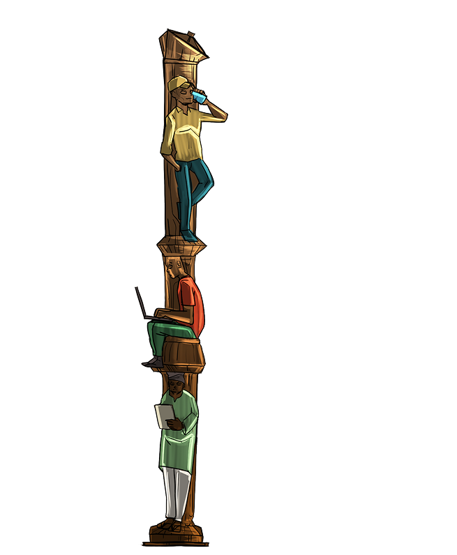
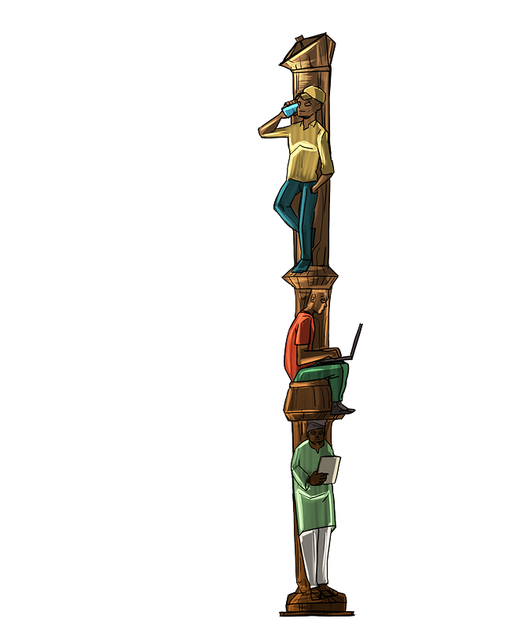
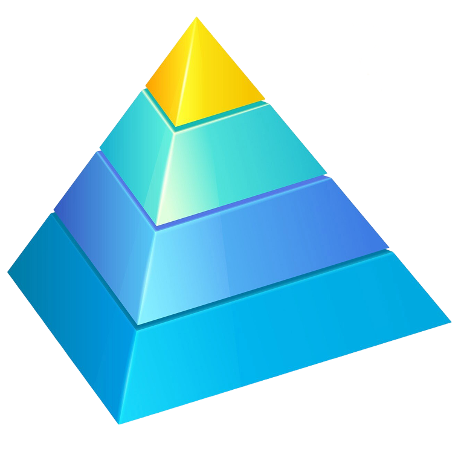

Établie en 2018, IOKEO a assuré des engagements auprès de clients prestigieux et exigeants, du secteur public comme privé, au Bénin et dans la sous-région. Nous avons développé des expertises internes, autant technologiques que méthodologiques, ainsi qu'un réseau de partenaires technologiques avec l'ambition assumée de proposer une expertise au niveau des meilleurs à l'international, une qualité et une fiabilité sans concession sur les perspectives, livrables et solutions que nous délivrons pour nos clients.
Notre parcours et notre engagement


Nos Valeurs
Les principes suivant guident IOKEO dans son action et fondent les bases de sa culture :
IOKEO est un doer auprès de ses clients :
Il s'approprie leurs contextes uniques et partage leurs risques, et vise à développer une relation durable. Cette relation étant le cadre d'accompagnement des clients dans la durée, sur leur trajectoire de transformation, en les aidant à franchir différents de paliers de maturité avec maîtrise, agilité et adaptabilité mais sans improvisation. Le changement étant par essence au cœur des interventions de IOKEO, le cabinet propose toujours une méthodologie de conduite de sa mission construite autour de l'accompagnement au changement.
IOKEO privilégie la qualité de l'intervention :
IOKEO mobilise des équipes expérimentées, des méthodes éprouvées et des outils adaptés à chaque contexte. Nos interventions s'appuient sur une analyse rigoureuse des enjeux, des livrables clairs et un suivi attentif de leur mise en œuvre. Cette exigence nous permet de proposer des solutions utiles, pérennes et réellement créatrices de valeur pour nos clients.
IOKEO allie de manière cohérente une démarche classique de réflexion et de formulation stratégique, à celle innovante et actuelle de l'effectuation.
IOKEO associe la rigueur de l'analyse stratégique à une approche pragmatique orientée vers l'action. Nous clarifions les objectifs, les priorités et les ressources disponibles, puis avançons par étapes avec les partenaires et moyens mobilisables. Cette complémentarité permet de construire des réponses réalistes, adaptables et alignées sur les opportunités du terrain.
Notre vision
La philosophie d'intervention de IOKEO auprès de ses clients est celle d'un "doer" (faiseur) engagé. Au-delà du livrables, IOKEO s'implique dans l'exploitation / opérationnalisation des livrables, partageant le vécu unique des décideurs et des organisations qu'elle accompagne, ainsi que leurs risques dans une logique résolue d'orientation vers les résultats et d'une obsession de la création de valeur pour nos clients.
Mode d'intervention
IOKEO décline son expertise autour de trois métiers essentiels : la stratégie, les processus métiers et les systèmes d'information. Sur ces thématiques, nous intervenons à travers trois modalités complémentaires :
01
Conseil
Pour définir une vision claire et des orientations adaptées
02
Solution
Pour concevoir et mettre en œuvre des réponses concrètes
03
Formation
Pour renforcer les compétences et garantir l'autonomie des équipes.
